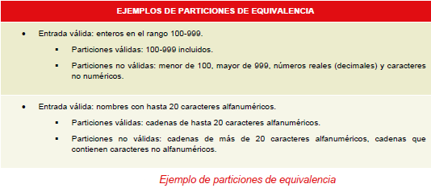
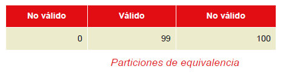
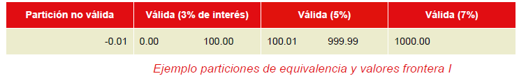
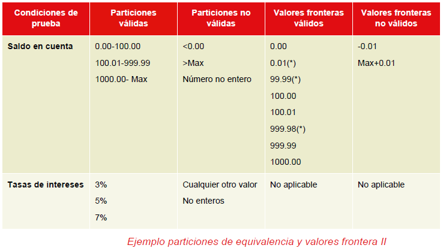

| Guideline: Guía para el Análisis de Valor Límite y Clases de Equivalencia |
 |
|
| Related Elements |
|---|
| 3.4.1.2 y 3.4.1.3 de Guía INTENCO de mejores prácticas de calidad del producto
software
El particionamiento de equivalencia es una técnica de caja negra basada en la especificación, muy
versátil. Puede aplicarse en cualquier nivel de pruebas y con frecuencia es buena como primera técnica a aplicar. Es
muy común y muchos técnicos de pruebas la practican de manera informal casi sin darse cuenta. Sin embargo, aunque es
mejor usarla de forma informal que no usarla, es mejor usar la técnica de manera formal para conseguir todos los
beneficios que puede ofrecer.
La idea que está detrás de esta técnica es dividir un conjunto de condiciones de prueba en grupos o
conjuntos que puedan ser considerados iguales (p.ej. el sistema debería manejarlos de forma equivalente), de ahí
"particionamiento de equivalencia". Las particiones de equivalencia se conocen también como clases de equivalencia, los
dos términos significan exactamente lo mismo.
La técnica de particionamiento de equivalencia requiere probar sólo una condición para cada partición. Esto es así porque asumimos que todas las condiciones de una partición serán tratadas de la misma manera por el software. Si una condición en una partición funciona, asumimos que todas las condiciones en esa partición funcionarán. De la misma forma, si una de las condiciones en una partición no funciona, entonces asumimos que ninguna de las condiciones en esta partición en concreto funcionará. Por supuesto estas son suposiciones simplificadas que pueden no ser siempre correctas, pero si las escribimos, al menos da la oportunidad a otras personas de cuestionar los supuestos que hemos hecho y de ayudar a crear mejores particiones. Si hay tiempo, se debería probar más de un valor para una partición, especialmente si se quiere confirmar una selección típica de entradas de usuario. Clases de equivalencia y particiones de entrada D18
3.4.1.2 y 3.4.1.3 de Guía INTECO de mejores prácticas de calidad del producto software.
Existen varios tipos de particiones entre las que destacamos las particiones de entradas y las de
salidas.
Particiones de entradas
Agrupación en particiones de las
posibles entradas del programa. Por ejemplo, un programa que acepte valores enteros puede aceptar como válida cualquier
entrada que sea un entero y no debería aceptar ningún valor más (como números reales o caracteres). El rango de enteros
es infinito, aunque el ordenador limitará el rango a algunos valores finitos tanto negativos como positivos
(simplemente porque sólo puede manejar números de un cierto tamaño; es una máquina finita). Vamos a suponer para el
propósito de un ejemplo, que el programa acepta cualquier valor entre -10000 y + 10000. Si imaginamos un programa que
separa números en dos grupos dependiendo de si son positivos o negativos, el rango total de enteros podría separarse en
tres particiones: los valores que son menores que cero; cero; y los valores que son mayores que cero. Cada uno de estos
grupos se conoce como "particiones de equivalencia" porque cada uno de los valores dentro de una partición es
equivalente a cualquier otro valor de esa partición en lo que al programa se refiere. De esta manera si el programa
acepta -2905 como un entero negativo válido esperaremos que también acepte el -3. De forma similar, si acepta 100
también debería aceptar 2345 como un entero positivo. El cero se trata como un caso especial. Podríamos, si
quisiésemos, incluir el cero con los enteros positivos, pero la especificación rudimentaria que hemos usado para el
ejemplo no especifica esto de forma clara, así que se deja como un valor indefinido (y es típico encontrar ambigüedades
de este tipo o áreas no definidas en especificaciones).
En el ejemplo dado, entonces
necesitamos cualquier entero positivo, cualquier entero negativo y el cero. Generalmente se seleccionan valores cerca
del centro de cada partición, así que podemos elegir, -5000, 0 y 5000 como representaciones. La teoría dice que si el
programa trata estos tres valores correctamente es muy probable que lo haga igual con el resto.
Las particiones que se han elegido
se llaman particiones de equivalencia válidas porque recogen las entradas válidas, pero hay otras posibles entradas a
este programa que deberían no ser válidas: números reales, por ejemplo. También hay dos particiones de enteros que no
son válidos: enteros menores de -10000 y enteros mayores de 10000. Deberíamos probar que el programa no los acepta, lo
que es tan importante como que el programa acepte entradas válidas.
Si pensamos en el ejemplo,
reconoceremos que hay más entradas no válidas posibles que las válidas, ya que todos los números reales y los
caracteres no son válidos en este caso. En general hay más formas de proporcionar entradas incorrectas que correctas;
por eso necesitamos asegurar que se ha probado el programa contra las entradas no válidas posibles. De nuevo aquí
aparecen las particiones de equivalencia: todos los números reales son no válidos y los caracteres tampoco. Esto
representa dos particiones no válidas que se deberían probar usando valores como 9.45 y ‘r’ respectivamente. Habrá
muchas otras entradas no válidas posibles, así que hay que limitar los casos de
pruebas a aquellos que son más probables que aparezcan en una situación real.

Particiones de salidas
De la misma forma que la
entrada de un programa puede ser particionada, lo puede ser la salida. Supongamos un programa de cuentas bancarias que
genera las siguientes salidas: por los primeros 1000€ 0.5 % de tasas de interés, 1% por los siguientes 1000€ y 1.5%
para el resto. Con estos datos se pueden usar casos de uso que generen cada una de estas salidas como alternativa a
generar particiones de entradas. Un valor de entrada entre 0-1000€ generaría como salida el 0.5%; un valor entre
1001-2000€ generaría el 1%; un valor mayor que 2000€ generaría 1.5% de salida.
Otras particiones Si sabemos suficiente acerca de la aplicación seremos capaces de hacer particiones con otros valores en vez de o de la misma manera que con las entradas y salidas. Por ejemplo, si un programa maneja peticiones ubicándolas en una de las colas existentes, podríamos, en principio, comprobar que la petición termina en la cola correcta. En este caso un conjunto de entradas se puede particionar de acuerdo con la cola en la que anticipamos que van a ser colocadas. Este tipo de particionamiento es más técnico y difícil que el particionamiento de entradas y salidas pero es una opción que puede ser considerada cuando sea apropiada. Análisis de valor frontera Una de las cosas que sabemos acerca de las clases de errores que cometen los programadores es que los errores tienden a agruparse alrededor de las fronteras. Por ejemplo, si un programa debería aceptar una secuencia de números entre 1 y 10, el error más probable será que los valores justo fuera del rango sean aceptados de forma incorrecta o que los valores justo en los límites del rango sean rechazados. El análisis del valor frontera está basado en probar los valores frontera de las particiones. Al hacer "comprobaciones de rango", probablemente se esté usando de forma inconsciente el análisis del valor frontera. En esta técnica también contamos con fronteras válidas (en las particiones válidas) y fronteras no válidas (en las particiones no válidas). Como ejemplo consideremos una impresora que tiene una opción de entrada del número de copias a hacer, de 1 a 99.

Tenemos la partición de enteros de 1 al 99, que tiene como valor mínimo el 1 y como
máximo el 99. A estos dos valores se les denomina valores frontera. Realmente se les denomina valores frontera válidos
porque son fronteras dentro de la partición válida. ¿Y los valores de fuera? La frontera de los valores no válidos
menores es el cero porque es el primer valor que se encuentra cuando se sale fuera de la partición por la parte más
baja (también se puede pensar que es el valor más alto dentro de la partición no válida de enteros menores de 1). Por
la parte superior del rango también tenemos un valor frontera no válido, el 100.
Existen dos aproximaciones teóricas de esta técnica. Una de ellas toma los valores mínimo y máximo de las particiones válidas y el primer o el último valor respectivamente de las particiones no válidas adyacentes a las particiones válidas (en el caso de que las haya, ya que no todas las particiones válidas van a tener particiones no válidas adyacentes). De esta forma se tomarían como valores frontera los reflejados en el párrafo anterior: 0, 1, 99 y 100. Esta aproximación recibe también el nombre de aproximación de dos valores. La otra aproximación incluye un valor más. La regla es que se usa el valor frontera en sí mismo y un valor a cada lado de la frontera (tan cerca como se pueda coger). Así que en este caso tendríamos como valores frontera el 0, 1, 2 por el límite inferior y 98, 99 y 100 en el límite superior. ¿Qué significa coger el valor tan cerca como se pueda? Significa coger el siguiente valor en la secuencia usando la precisión que se haya aplicado a la partición. Si los números tuvieran una precisión de 0.01, por ejemplo, los valores frontera del límite inferior serían 0.99, 1.00, 1.01 y los del límite superior serían 98.99, 99.00, 99.01. Esta aproximación recibe también el nombre de aproximación de tres valores. A la hora de elegir entre una aproximación u otra hay que tener en cuenta que la segunda puede ser menos eficiente ya que estas dos técnicas (particionamiento de equivalencia y análisis del valor frontera) se suelen llevar a cabo de forma conjunta y siguiendo con el ejemplo anterior, al seleccionar como valores fronteras el 2 y el 98 se redundaría, ya que estos valores estarían probados con el número representativo de la partición (valor de equivalencia). Un ejemplo que refleja las técnicas de particiones de equivalencia y valores frontera podría ser el siguiente. Una cuenta de ahorro en un banco gana diferentes tasas de interés dependiendo del saldo de la cuenta. Si el saldo es de 0 a 100€ tiene una tasa de interés del 3%, un saldo por encima de 100 hasta 1000€ tiene un 5% de interés y saldos desde 1000€ tendría un 7% de interés. Podríamos identificar inicialmente tres particiones de equivalencia válidas y una inválida como se muestra a continuación:  Los valores frontera en este caso serían -0.01 (un valor frontera no válido), 0.00, 0.01, 99.99, 100.00, 100.01, 999.98, 999.99, 1000.00. Una buena forma de representar las particiones y las fronteras válidas e inválidas es una tabla como la siguiente:  (*) Los valores marcados con asterisco sólo se considerarían como valores frontera en la aproximación de tres valores. Mirando los datos de la tabla podemos observar que no se ha especificado un máximo para la tasa de interés del 7%. Sería interesante conocer cuál es el valor máximo de saldo de una cuenta para poder probar los valores frontera. Este tipo de frontera recibe el nombre de "frontera abierta", porque uno de los lados de la partición se deja abierto (no definido). ¿Significa esto que podemos ignorarlo? Las fronteras abiertas son más difíciles de probar, pero hay formas de aproximarse. Realmente la mejor solución al problema es encontrar como debería estar especificada la frontera. Un enfoque es volver a la especificación para ver si se ha establecido un máximo en algún sitio. Si es así, sabemos cuál es nuestro valor frontera. Otro enfoque puede ser investigar otras áreas relacionadas del sistema. Por ejemplo, el campo que contendrá el saldo sólo admitirá números de seis dígitos más dos decimales. Esto podría darnos un máximo de 999999.99€. Si no podemos encontrar nada sobre cuál debería ser la frontera, entonces necesitaremos usar un enfoque intuitivo o basado en la experiencia para probar varios valores para intentar que el programa falle. También podríamos intentar encontrar la frontera abierta por el límite inferior, ¿cuál es el saldo mínimo negativo? En este ejemplo se ha omitido, pero en algunos casos también sería de interés. Como ya se ha comentado antes las técnicas de particionamiento de equivalencia y análisis del valor frontera están estrechamente unidas ya que toda frontera está en alguna partición. Se recomienda elegir valores en las particiones que no sean valores frontera. |